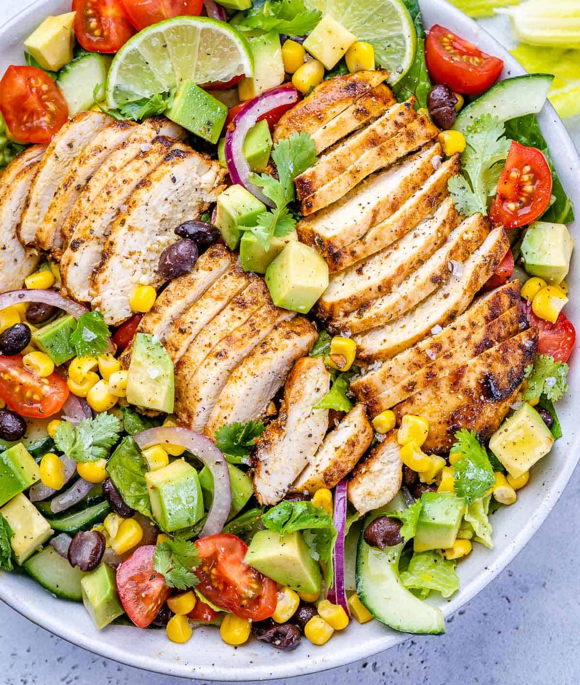

CHICKEN SALAD
This Southwest Chicken Salad is the perfect salad that can be enjoyed all year long.
Loaded with protein, fiber, nutrients, and it’s full of flavor. Tossed with a simple
garlic lemon marinade, it is easy to make and perfect for lunch or dinner.
Salads are delicious and simple to put together and can get as creative as you like.
We really loved putting together this simple grilled chicken salad with a southwest kick to it.
It is loaded with fresh veggies and beans, then topped with tender and juicy chicken.
The southwest salad is tossed in with a simple lemon garlic marinade and can be enjoyed
for lunch or a light dinner. It is easy to make, fresh and very healthy

INGREDIENTS FOR CHICKEN SALAD
For chicken and marinade:
- boneless skinless chicken breasts
- olive oil
- lime
- cilantro leaves
- garlic cloves
- cumin
- chili powder
- salt and pepper
For salad:
- romaine lettuce or one head of lettuce
- cherry tomatoes
- black beans
- canned corn
- red onion
- avocado
- cilantro
Dressing:
- olive oil
- one lime
- garlic
- salt and pepper
HOW TO PREPARE CHICKEN SALAD
- First, marinate the chicken: Place the chicken in a shallow dish and add the oil,
lime juice plus zest, garlic, and seasonings. Rub the chicken well, then cover the
dish and allow it to marinate for at least 30 minutes over the counter.
If time allows, you can marinate in the fridge overnight.
- Make the dressing: Combine all dressing ingredients into a small bowl and whisk until smooth.
- Next, cook the chicken: Heat a non-stick frying pan over medium-high heat. Add the chicken
and cook for 5 minutes on each side, or until golden brown and cooked through.
Allow the chicken to slightly cool, then slice it.
- Assemble salad and serve: While the chicken cools, add all the salad ingredients to a bowl.
Top with juicy chicken and drizzle the dressing over. Finally, toss to combine then serve. Enjoy!